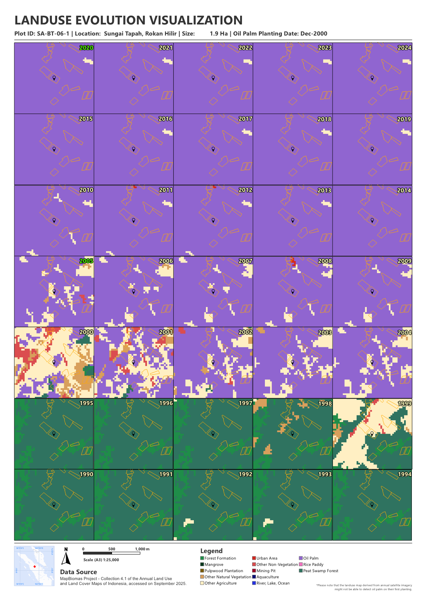

Land Use Change Visualization for Smallholder Plots
Mon 15 Dec 2025 • 16:19 GMT by Spatiality
Land Use Change Visualization on Smallholder Plots. Documentation by Spatiality
Land use change analysis is a fundamental task in GIS, typically involving a comparative study of two snapshots in time. However, practitioners often face the persistent challenge of sourcing cloud-free imagery for classification, particularly across large project areas. MapBiomas has significantly lowered this barrier by providing ready-to-use land cover data spanning 1990 to 2024, making it an invaluable resource for research and field verification.
While the MapBiomas platform is excellent for quick insights, I prefer to integrate this data into my own workflows using Google Earth Engine. By customizing the processing pipeline, I can extract and visualize data within specific Areas of Interest (AOI) for offline analysis.
I recently utilized this workflow to generate land use change map series for over 500 smallholder plots. The objective was two-fold: to extract annual land use histories for each plot from 1990 to 2024 and to estimate the planting year of oil palm following initial land clearing.
To extract these values, I rely on zonal statistics. Since land use data is categorical (rasterized as classified values), this tool allows for precise spatial-statistical aggregation. While there are many statistical options available, I focus on the "Majority" and "Minority" outputs to characterize the land use composition within each plot. See how it works below.
How is the Zonal Statistics Works?

Zonal Statistics Calculation. Documentation by Spatiality
However, relying solely on a simple majority can be misleading. A 5-hectare plot might be split, with 2.6 hectares used for crops and the remainder preserved as vegetation. If a simple majority calculation shows a marginal 1% lead, it might falsely suggest the entire plot is under active plantation. To avoid this, I incorporate the percentage of occurrence. By analyzing both the majority and minority values alongside their respective percentages, I can flag plots with mixed land use, providing a much more nuanced result than a standard automated script would achieve.
Once the data is processed, I utilize Data Driven Pages in ArcGIS to automate the export process. Each map frame is generated dynamically, including the owner’s name, total plot size, and the calculated plantation year. This automated approach has been a game-changer, allowing me to produce high-quality, site-specific visualization maps for hundreds of plots while significantly reducing my reporting turnaround time.
Result

Land Use Change Visualization. Documentation by Spatiality